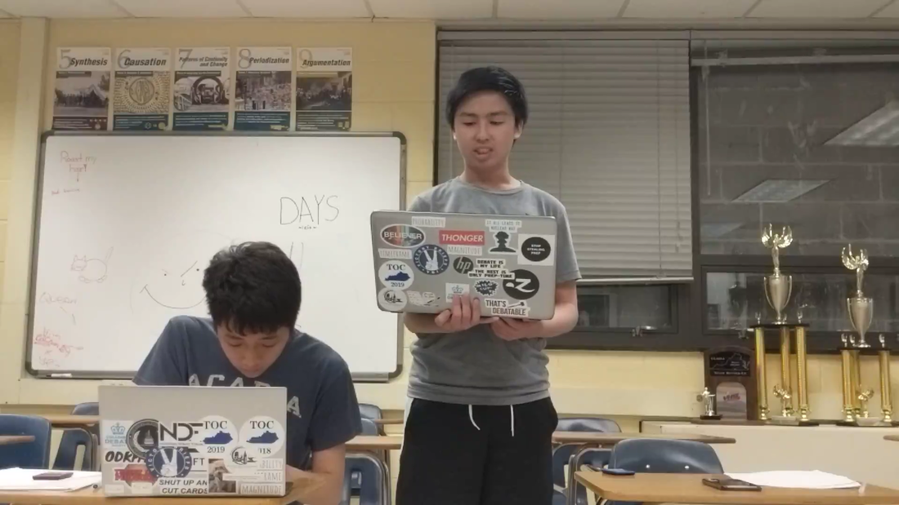
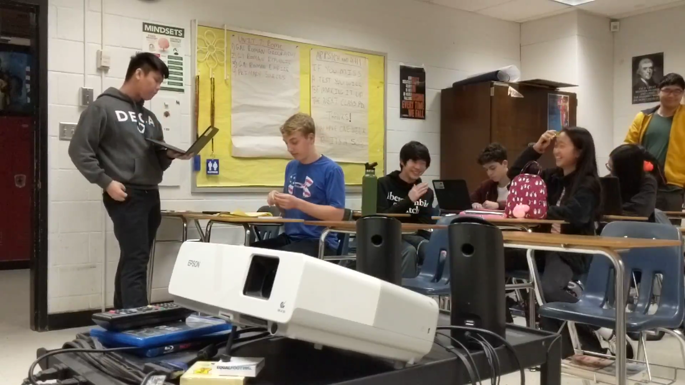

Public Speaking
Public Forum Debate can boost anyone's public speaking skills. Debaters learn to articulate positions and engage with others constructively, communicating their ideas on a wide range of topics. Students will learn skills that help in presentations and in-class discussions, and will gain crucial life skills that will help any career.

Current Events
To do well in Public Forum Debate, teams must stay educated in recent world events. The constantly changing topic means students are exposed to a wide range of issues, from Universal Health Care to the Yemeni civil war. Debaters will become global citizens, as public Forum exposes them to perspectives that most students won't encounter.
College Admissions
Since Public Forum enhances all of these skills and benefits, colleges recognize the significance of this extracurricular. Debaters are consistently accepted into top institutions at higher rates, and the skills learned are invaluable in the college application process and throughout college itself.